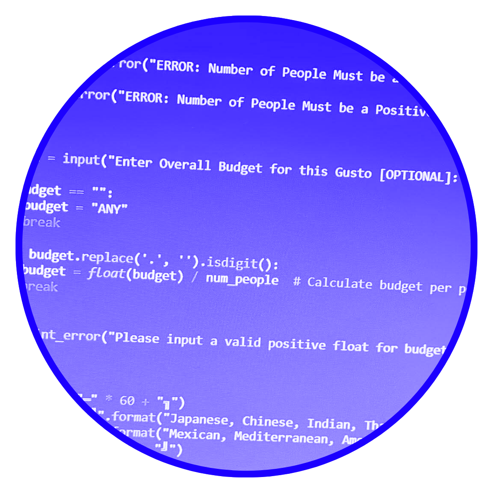
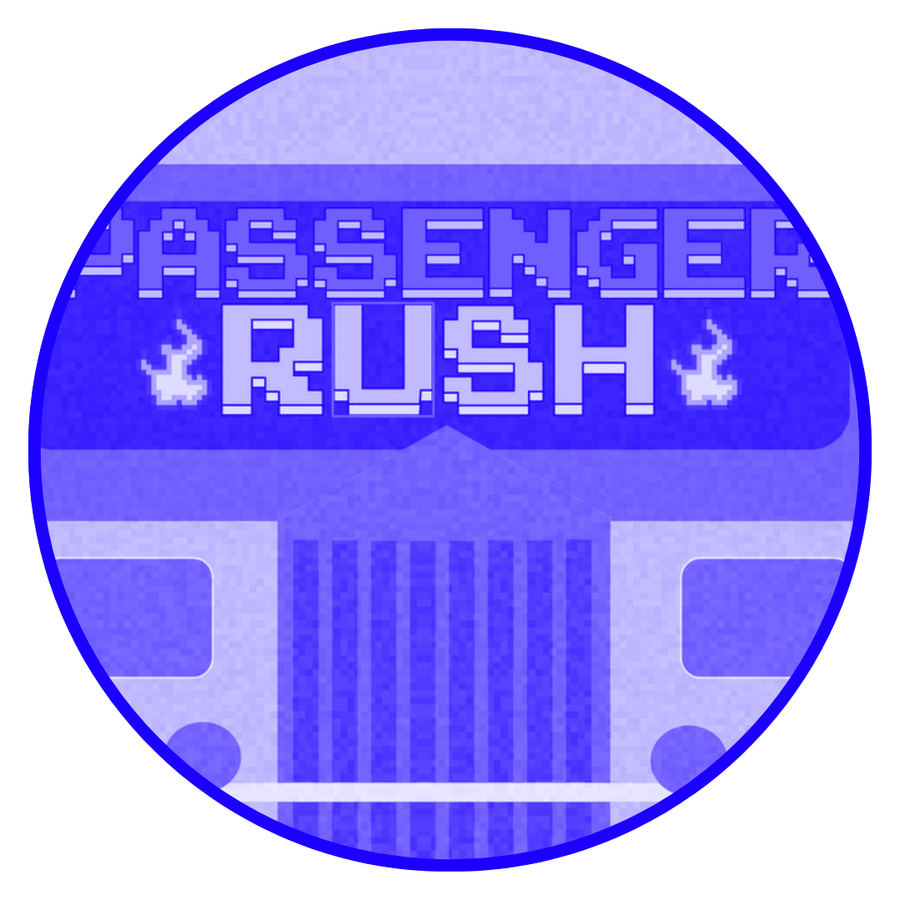
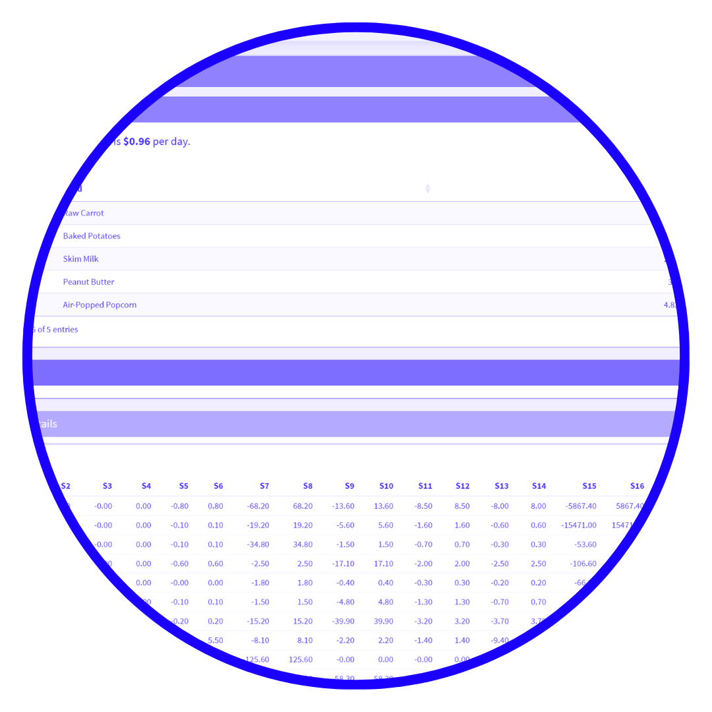
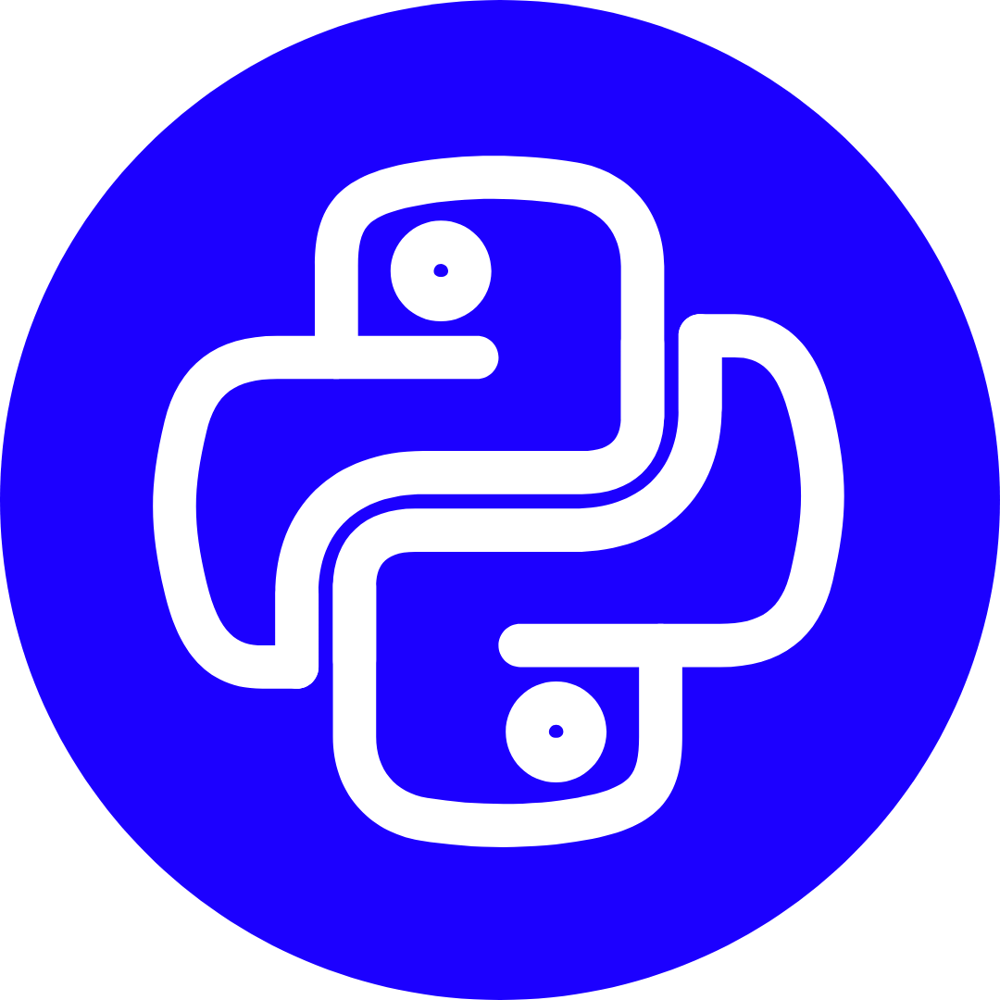

I'm a second year BS Computer Science student from University of the Philippines Los Banos. I have moderate coding skills, with particular interest on front-end web developing. Furthermore, I also dabble with visual and multimedia arts, specializing in painting and graphic design. I enjoy creating interactive and visually appealing user interfaces, and I am always eager to learn new technologies and frameworks to enhance my skill set.

This is a program that was created during my CMSC 12 class using python. This program allows a user to choose from various dining-related parameters. The program will then recommended restaurant options accordingly to chosen categories.

This is an interactive 2-player game created on javafx. This game allows user to duel as they accumulate passengers on a given time. Along with this, they are also faced with various obstacles and rewarded with certain power-ups as well. The winner with the most passenger drop-offs wins the game.

This is a detailed diet plan solver made with R. This program enables user to select from a wide array of food choices and the program is able to calculate the dietary components of the food items chosen. The program utilizes various logical computations that enables the program to compute the dietary requirements of each food combinations according to specified dietary restrictions.
Back when I was choosing between various degree programs for college, I was torn on medicine, multimedia arts, and computer science. As a student whose crutial deciding stages were limited by the conditions brought by the pandemic, I was grasping at straws on what academic career should I pursue once I graduate high-school. Ultimately, my interest in this field was piqued when I stumbled upon aan interesting youtube video that tackles how programming and animation goes hand-in-hand. From there, I delved into more applications of computer science in the media and creativity field. Moving forward, I am committed to honing my skills, exploring new technologies, and expanding my knowledge to bridge the gap between computation and creativity.
